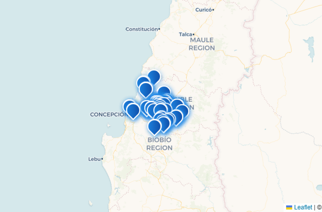

Nuestra Misión
Entregar agua purificada de alta calidad a comunidades rurales y urbanas, con responsabilidad, eficiencia y cercanía. Nos dedicamos a la purificación y distribución de agua en bidones, garantizando un proceso riguroso y responsable que cumple con altos estándares de higiene y seguridad.

Nuestra Visión
Convertirnos en uno de los líderes en la distribución de agua en la región y sus alrededores, promoviendo el acceso equitativo a este recurso vital. Buscamos expandir nuestra presencia y mejorar continuamente nuestros procesos para servir mejor a nuestra comunidad.